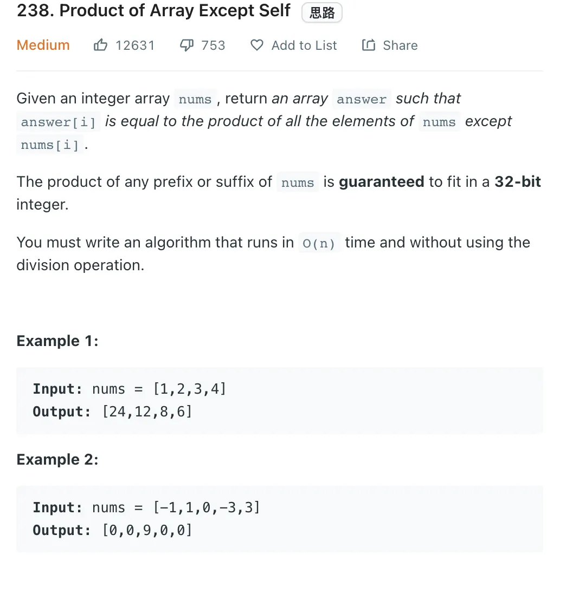
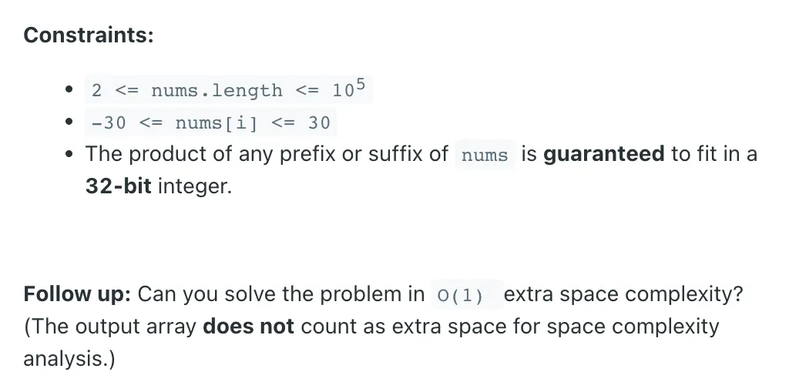
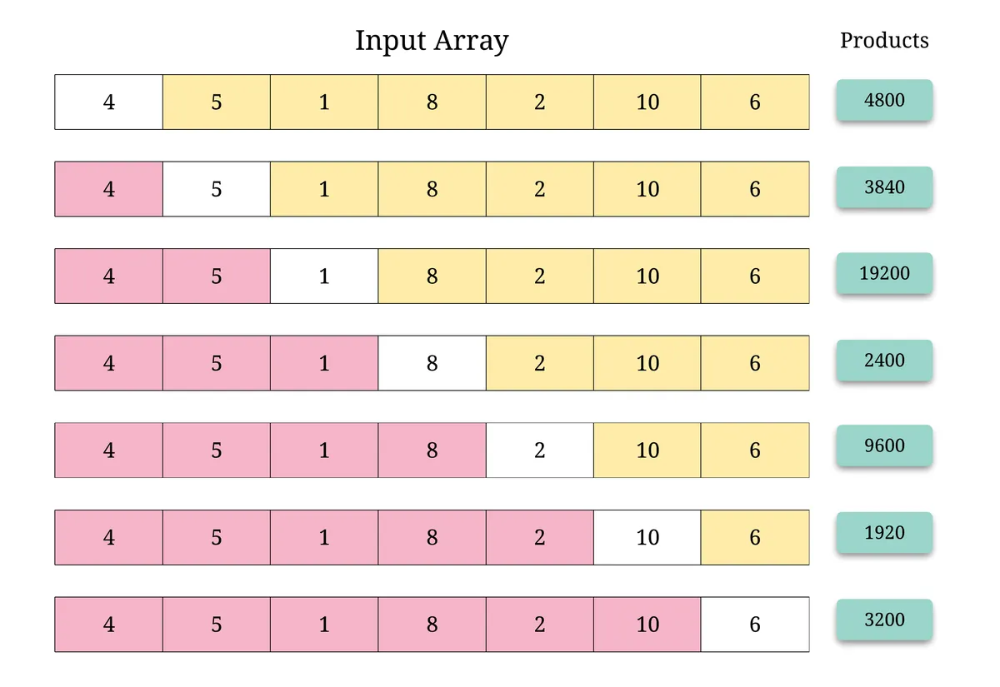

238. Product of Array Except Self
考過的公司：Asked by: Amazon
Question


先自己想想看 🤔Try it yourself first 🤔
✍🏽 My Solution - 暴力解
class Solution {
public int[] productExceptSelf(int[] nums) {
int n = nums.length;
int[] res = new int[n];
for (int i = 0; i < n; i++) {
int tmp = 1;
for (int j = 0; j < n; j++) {
if (i == j) continue;
tmp *= nums[j];
}
res[i] = tmp;
}
return res;
}
}
🧠 Thought Process
- What is the time/space complexity of my solution? How do I know?
- time: O(n^2) 但是不符合題目的 O(n)要求
- space: O(1)
Solution #1 [前綴後綴統計]
Runtime: 4 ms, faster than 17.30% of Java online submissions for Product of Array Except Self.
Memory Usage: 56.6 MB, less than 72.69% of Java online submissions for Product of Array Except Self.
class Solution {
public int[] productExceptSelf(int[] nums) {
int n = nums.length;
int[] left = new int[n]; // 0 ~ i-1
left[0] = 1;
for (int i = 1; i < n; i++) {
left[i] = left[i - 1] * nums[i - 1];
}
int[] right = new int[n]; //i+1 ~ n-1
right[n - 1] = 1;
for (int i = n - 2; i >= 0; i--) {
right[i] = right[i + 1] * nums[i + 1];
}
int[] res = new int[n];
for (int i = 0; i < n; i++) {
res[i] = left[i] * right[i];
}
return res;
}
}
1 2 3 4
1 1 2 6
。 4 1
Explanation (in my words)
- How does their solution work?
- 白色部分表示当前准备求解的位置，其结果就是粉色部分数字的累乘再乘上黄色部分数字的累乘。换句话说，其实就是左右两部分的累乘结果再相乘
-
所以我们只需要把所有粉色结果和黄色结果提前保存起来，然后可以直接去计算结果了。
假设数组个数是
n。我们用
left[i]存储下标是0 ~ i - 1的数累乘的结果。用
right[i]存储下标是i + 1 ~ n - 1的数累乘的结果。那么
res[i] = left[i] * right[i]。至于边界情况，我们把
left[0]和right[n - 1]初始化为1即可。

- What is the space/time complexity of their solution?
- time: O(n)
- space: O(n)
Solution #2 [前綴後綴統計 without extra space]
Runtime: 2 ms, faster than 80.71% of Java online submissions for Product of Array Except Self. Memory Usage: 58.3 MB, less than 15.99% of Java online submissions for Product of Array Except Self.
class Solution {
public int[] productExceptSelf(int[] nums) {
int n = nums.length;
int[] res = new int[n]; // 0 ~ i-1
res[0] = 1;
for (int i = 1; i < n; i++) {
res[i] = res[i - 1] * nums[i - 1];
}
int right = 1;
for (int i = n - 1; i >= 0; i--) {
res[i] = res[i] * right;
right = right * nums[i];
}
return res;
}
}
Explanation (in my words)
- What is the space/time complexity of their solution?
- time: O(n)
- space: O(1)